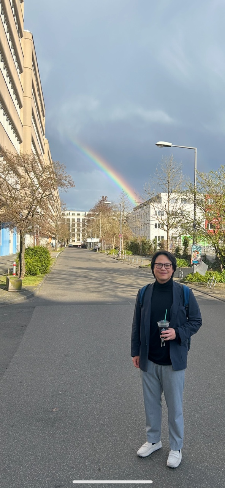

I am a post-doctoral research fellow in the
Department of Economics
at the University of Cologne.
My fields of interest are quantitative macroeconomics, household finance, and housing and mortgage markets.
I am on the academic job market for the 2026–2027 cycle.